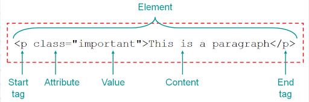
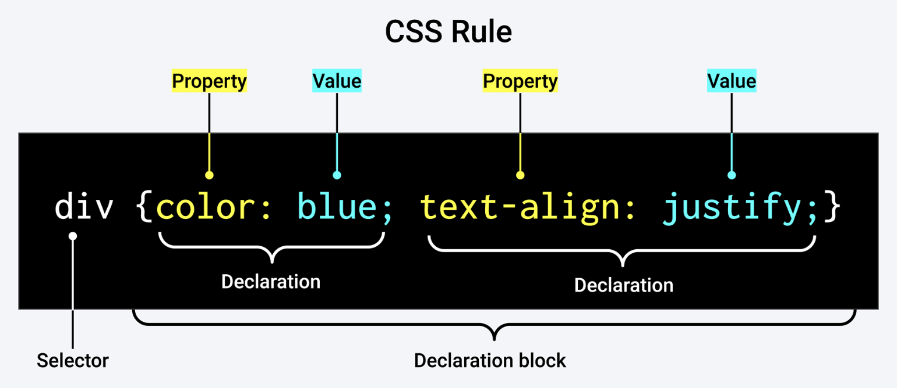
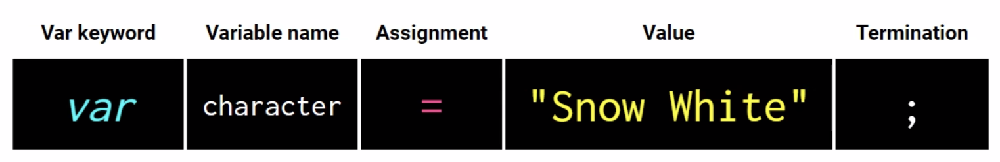
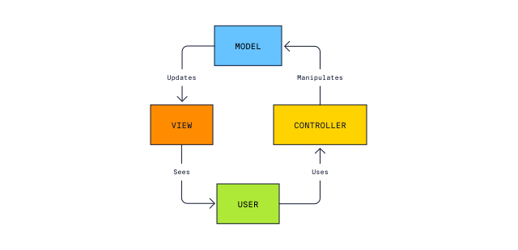

Important Links
VS Code
- Right click folder -> open in Integrated Terminal - opens Terminal in VS Code
- Get in the habit of always killing terminal when done by clicking the trash can icon.
- Right click -> preview lets you see your markdown preview
- Double click a tab on the top to make it stay. You can tell it worked when the text goes from italic to normal.
- Option + click selects multiple areas to start typing.
- Option + Z toggles text wrap in VS Code.
- Right click > rename symbol lets you change the name of something everywhere in your document.
- VS Code contains code templates that can be used. For example, if you type "for", you can click on "forof" and VS Code will give you a template to fill in.
Terminal
Terminal Notes
- Tab to autocomplete names that you know are present
- When navigating in Terminal, a leading slash on your path makes the path absolute, whereas omitting it makes the path relative to your present working directory. A leading slash means "at the root of the website", whereas omitting the slash means "the URL is relative to my current page".
- Most terminal commands have options — these are modifiers that you add onto the end of a command, which make it behave in a slightly different way.
- To find out exactly what options each command has available, you can look at its man page. This is done by typing the man command, followed by the name of the command you want to look up, for example man ls. Press q to quit when you're done.
- To run a command with multiple options at the same time, you can usually put them all in a single string after the dash character, for example ls -lah, or ls -ltrh.
Terminal commands
pwd- print working directory // this shows what folder you're inls- list // this lists the files in the folder you're incd- change directory // navigate to a different folder using slashes- Example:
cd users/finnlambouris
- Example:
cd ..- navigate backwards // move up a foldermkdir- make directory // creates folder- Example:
mkdir coding-bootcamp
- Example:
rmdir— remove directory // removes the named directory, but only if it's empty- If you want to remove a directory that is not empty (and also remove everything it contains), then you can use the
rm -rcommand. but this is dangerous.-r(recursive) deletes everything within the directory, so make sure there is nothing you might need later on, as it will be gone forever.
- If you want to remove a directory that is not empty (and also remove everything it contains), then you can use the
rm- remove // rm [filename] deletes a file. This delete is permanent and can't be undone via the recycle bin that you might have on your desktop user interface.touch- create file // create a file with any file extensiontouch /*folder/folder/file*/- creates a file within a folder without having to cd there
open- open file or folder // this opens the file or folder in the appropriate applicationcp- copy files or directories // creates a copy of the file in the first location specified, in the second location specified. This is basically just creating a new copy and you're specifying the name. It isn't copying into a new folder.mv- move files or directories // Technically the file is being moved, but from a practical perspective, this command is actually renaming the file.- Example:
mv mdn-example.md mdn-example.txtwill rename the .md file to a .txt file.
- Example:
-hor--help// will give you more information about a specific commandcurl- download files found at specific URLscurl -v- lets you see https requests and shows you if your connection to a site is working or notgrep- search for fragments of text inside larger bodies of textless,cat- view a file's contents page by pageawk,tr,sed- manipulate and transform streams of text // for example, changing all the instances of <div>s in an HTML file to <article>code .- opens current directory in VS Code
Git Commands:
- Setup & Init - Configuring user information, initializing and cloning repositories
git init- initialize an existing directory as a Git repositorygit clone /*url*/- retrieve an entire repository from a hosted location via URL
- Stage & Snapshot - Working with snapshots and the Git staging area
git status- show modified files in working directory, staged for your next commit // shows what branch we're ongit add /*file*/- add a file as it looks now to your next commit (stage): git add -A adds all changesgit reset /*file*/- unstage a file while retaining the changes in working directorygit diff- diff of what is changed but not stagedgit diff--staged - diff of what is staged but not yet committedgit commit -m"[descriptive message]" - commit your staged content as a new commit snapshot
- Branch & Merge - Isolating work in branches, changing context, and integrating changes
git branch- list your branches. a * will appear next to the currently active branchgit branch /*branch-name*/- create a new branch at the current commitgit checkout- switch to another branch and check it out into your working directorygit checkout -b /*insert new branch name*/- creates a new branchgit branch -d /*insert branch name*/- deletes git branchgit branch -a- shows all branches- remote branches (on server) will appear as red, while local branches (on computer) will appear as green
git merge /*branch*/- merge the specified branch's history into the current onegit log- show all commits in the current branch's history
- Inspect & Compare - Examining logs, diffs and object information
git log- show the commit history for the currently active branchgit log branchB..branchA- show the commits on branchA that are not on branchBgit log --follow [file]- show the commits that changed file, even across renamesgit diff branchB...branchA- show the diff of what is in branchA that is not in branchBgit show /*SHA*/- show any object in Git in human-readable format
- Tracking Path Changes - Versioning file removes and path changes
git rm /*file*/- delete the file from project and stage the removal for commitgit mv /*existing-path*/ /*new-path*/- change an existing file path and stage the movegit log --stat -M- show all commit logs with indication of any paths that moved
- Ignoring Patterns - Preventing unintentional staging or committing of files
- Save a file with desired patterns as .gitignore with either direct string matches or wildcard globs:
logs/ *.notes pattern*/ git config--global core.excludesfile /*file*/ - system wide ignore pattern for all local repositories
- Save a file with desired patterns as .gitignore with either direct string matches or wildcard globs:
- Share & Update - Retrieving updates from another repository and updating local repos
git remote add /*alias*/ /*url*/- add a git URL as an aliasgit fetch /*alias*/- fetch down all the branches from that Git remotegit merge /*alias*/ || /*branch*/- merge a remote branch into your current branch to bring it up to dategit push /*alias*/ /*branch*/- Transmit local branch commits to the remote repository branchgit pull- fetch and merge any commits from the tracking remote branch
- Rewrite History - Rewriting branches, updating commits and clearing history
git rebase /*branch*/- apply any commits of current branch ahead of specified onegit reset --hard /*commit*/- clear staging area, rewrite working tree from specified commit
- Temporary Commits - Temporarily store modified, tracked files in order to change branches
git stash- Save modified and staged changesgit stash list- list stack-order of stashed file changesgit stash pop- write working from top of stash stackgit stash drop- discard the changes from top of stash stack
GitHub
Pulling from and pushing to GitHub
- Never edit files directly in GitHub!
- You should never commit secrets to your gitHub repo
- Usually when you see a "dist" folder when coding, it is not meant to be distributed to the public. It is meant to be packaged into a .zip file and shouldn't be committed to the repo.
- Make sure you're in the correct folder. If there isn't already a repository set up, enter:
git init - To check what branch we are currently on, enter:
git status - To see your remote GitHub repository, enter:
git remote -v - To make a new branch, we'll enter:
git checkout -b feature/[enter name]- The checkout command is to move the working branch to a new branch, and the
-bflag creates a new branch. - It's good to do
feature/to indicate that it is a feature. It is good practice to name the branches for the feature that will be developed by them to help indicate the purpose of each branch.
- The checkout command is to move the working branch to a new branch, and the
- To add/update code to the current working branch, enter:
git add -A- The
-Aflag indicates that we want to add all changes.
- The
- To commit these files to the repo, enter: git commit
-m /*enter message*/- If you forget to add the
-mmessage, it will open up a new window where you must type the message. In this window, pressIto enter insert mode and then type your message. When you're done, pressescto exit insert mode, and then press:wqto write and quit.
- If you forget to add the
- Always double check to make sure your local branch is in sync with the base branch in GitHub. To do this, enter:
git pull origin main- Use the pull command to receive a branch's modifications into the local environment. "origin" indicates the source of the pull will be in the GitHub repo. "main" indicates the branch.
- If all is well, you should receive the message "Already up to date."
- Finally, to push changes, enter:
git push origin feature//*enter name*/ - After this, when you open GitHub you'll see that there is a pull request. Great job!
Helpful Links
Heroku
Deploying
- Deploying to Heroku is as easy as creating the app on Heroku and then connecting to GitHub.
- An important thing to note is that you need to have your port variable in your server.js file set in this specific way for your app to work in Heroku:
const PORT = process.env.PORT || 3001; - If you need to link a database to your deployed app on Heroku, click on the app, head to the resources tab, and and add JawsDB MySQL.
- Then, in your connection.js file, set your sequelize up like this:
let sequelize; if (process.env.JAWSDB_URL) { sequelize = new Sequelize(process.env.JAWSDB_URL); } else { sequelize = new Sequelize( process.env.DB_NAME, process.env.DB_USER, process.env.DB_PW, { host: 'localhost', dialect: 'mysql', port: 3306, }, ); } - Make sure to go to the settings tab and set up your Config Vars. These should be set as what you have in your .env file.
- Since this will be a brand new JawsDB database, it won't have any data. To seed it, click "more" and then "run console". Then, you can run the seeding script.
heroku run node seeds/seed.js
ESLint & Prettier
Configuration
- Since I am working off an external drive on my Mac, all of my files get duplicated with a “._” version. This section contains a couple extra steps/configurations to make sure these files are ignored.
- Eslint is for checking code syntax and problems.
- Prettier makes sure your code is formatted in a particular style.
- We can format Eslint to address Prettier formatting as well. To do this, you need prettier, eslint, and eslint-config-prettier all installed as devdependencies.
npm install --save-dev eslint npm install --save-dev prettier npm install --save-dev eslint-config-prettier - Then, create an eslint.config.mjs file at the root of your directory. Make sure to export your eslintConfigPrettier & your eslint configuration info.
import js from "@eslint/js"; import eslintConfigPrettier from "eslint-config-prettier"; export default [ js.configs.recommended, { rules: { "no-unused-vars": "warn", "no-undef": "off", }, }, eslintConfigPrettier, ]; - Make sure to create a .prettierignore file and include any files or directories that you want to have ignored.
- Next, create some scripts that will check and/or fix your code. Below are some helpful scripts.
"scripts": { "lint-check": "eslint --ignore-pattern '**/._*' --no-warn-ignored", "prettier-check": "prettier . --check", "check": "npm run prettier-check && npm run lint-check", "lint-fix": "eslint --fix --ignore-pattern '**/._*' --no-warn-ignored", "prettier-fix": "prettier . --write", "fix": "npm run prettier-fix && npm run lint-fix" },
Helpful Links
HTML
HTML Notes
- The head element contains information about the webpage.
- The body element represents the visible content shown to the user.
- Adding a link:
<a href="[url]"><[link text]</a> - adding an image
<img src="url or path" alt="[image description]"> <!-- insert comment -->- add comments in html file without them showing up on the actual webpage- The shortcut for this is to press command + / to make the current line into a comment.
- Classes and ids are similar, but a class can be used multiple times while an id can only be used once.
- With self closing tags, make sure to do
/>instead of>, even though>will still work. <div>and<span>are generic tags with no meaning (not semantic).- Semantic HTML is better for code legibility, accessibility features like screen readers, and SEO. If you're using a generic tag, there is probably a semantic tag that would work better.
- header vs heading - header is at the top of the page, heading is
<h1>through<h6>.
HTML Forms
- The HTML
<form>element can contain one or more of the following form elements:<input><label><select><textarea><button><fieldset><legend><datalist><output><option><optgroup>
- The input element is used for text fields like names, email addresses, and messages
<label for="[input id]">[label text]</label> <input id="[id]" type="[text]" / "[password]" placeholder="[placeholder]"> - The select element defines a drop-down list
<label for="[input id]">[label text]</label> <select id="[id]" name="[name]"> <option value="[option 1]">[option 1]</option> <option value="[option 2]">[option 2]</option> <option value="[option 3]">[option 3]</option> </select> - The button element defines a clickable button
- read more about HTML forms here
- Data Attributes allow us to store extra information on HTML elements
- Syntax to create custom data attributes:
data-[insert anything here]="[insert value here]"
- Syntax to create custom data attributes:
- The network tab of Chrome Dev Tools will show you if all your https requests are working or not
Helpful Links
CSS
CSS Notes
- In Chrome Dev Tools, click the triangle icon on shortcuts to see what each declaration is
- Link an external stylesheet to your HTML file:
<link rel="Stylesheet" href="[insert path to Stylesheet]"> - You can apply multiple classes to HTML; just separate them by a space.
class="class-1 class-2" - The
font-familyvalues go from most specific to least specific. This means that if the first font cannot be accessed by the device, it will move onto the next value.font-family: "Comic Sans" cursive sans-serif - Setting the height and line height as the same number is a cheat code to center text vertically.
Reset Stylesheets
- Every browser has its own default style rules. It is best practice to overwrite these rules so that your webpages will look uniform across all browsers.
- Have a seperate reset.css stylesheet
- Stylesheet order:
<link rel="stylesheet" href="reset.css"> <link rel="stylesheet" href="thirdparty.css"> <link rel="stylesheet" href="style.css"> - The reason they should be in this specific order is because HTML is read from beginning to end, meaning that your CSS rules can be overwritten if they're in the wrong order.
Selectors
- From least to most specific:
- Universal - selects all HTML elements on the page
- Example:
* {
- Example:
- Element - selects HTML elements based on the element name
- Example:
p { - You can also specify that only specific HTML elements should be affected by a style rule
- Example:
p.class {would only affect paragraphs with the "class" class
- Example:
- Example:
- Class - selects HTML elements based on (one of) their class(es)
- Example:
.class {
- Example:
- ID - selects HTML elements based on the unique id
- Example:
#unique-id {
- Example:
- Universal - selects all HTML elements on the page
- Any of these types of selectors can be given a further pseudo-class, which is used to define a special state of an element
- Example:
.class:hover {
- Example:
- The rule with more specificity is the one that will win if there are conflicting style rules
- Style rules can be grouped
- Example:
h1, h2, p {
- Example:
- You can use + sign to determine rules for a specific tag directly following another tag
- Example: article ul + p selects:
<article> <p> ... <ul> <p> // <- selected
- Example: article ul + p selects:
- You can also use the
*symbol to select everything within a parent element- Example:
section ul * {
- Example:
- The
>symbol only selects direct children- Example:
section ul > * {
- Example:
- Creating variables at the root
:root { --name: [any repeated style rule]; } - Then, later in the document when you want to reference the variable, use:
[element] { [property]: var(--name); } - Root variable example:
:root { --white: #fff; } p { color: var(--white); } - Here's a fun game to help practice selectors: CSS Diner
Display
- Inline elements do not start on a new line and only take up as much width as necessary.
- You cannot set the width and height of inline elements - except for images
- Block elements always start on a new line and take up the full width available.
margin: 0 autocan be used for block elements to set the top and bottom margins to 0 and center it horizontally within its parent element.
- Each element has a default display, but it can be changed with CSS by adding the "display" property.
- Elements can be hidden by using the
display:nonedeclaration.
Box Model
- From innermost to outermost: content -> padding -> border -> margin
- Content - the content's "hitbox"
- Padding - the space between the border and content
- Border - the border! Duh!
- Margin - the spacing between elements
- The overall "size" of the image is only the content + padding + border, because the margin isn't a part of any element, it's just the spacing between them.
- Example: 200px x 200px image with 20px padding, 10px border, and 30px of padding will have a width and height of 260px (200 + (20x2) + (10x2).
- The
border-styleneeds to be set to have your border appear on the page. - shortcuts that have 4 values around it such as
paddingare writtem in NESW direction
Positioning
- Types of positioning:
- Static - this is the default value and the element is in normal document flow
- Relative - the element is still in normal flow, but the values top, right, left and bottom can be used to offset the element.
- Absolute - The element is removed from the normal flow and its final position is relative to the determined parent or ancestor. To determine the parent, you must give it the
position: absolute;declaration as well. Absolute-positioned elements are also moved by the values of top, right, bottom, and left. - Fixed - The element is removed from the normal document flow and the position is relative to the viewport. Fixed-position elements are also determined by the values of top, right, bottom, and left.
- Viewport: the area of the window in which web content can be seen
- Note: normal flow means that the HTML will display in the order it is written. If a static or relative positioned
<img>is written inside of a<section>, it will appear there on the page. - Z-index controls the stacking order of overlapping elements on a page. An element with a higher z-index value will appear in front of an element with a lower z-index value.
- Viewport units:
- vh - the height of the screen
- As opposed to "height," which is just the height of any given object
- vw - viewport width
- vh - the height of the screen
Transformations
- Apply transformations with the transform property
- HTML text written in all caps will always be read by screen readers as acronyms. If you want any words to be in all caps, use the
text-transform: uppercase;declaration. - Read more about the transform property here
Animation
- Animations consist of two components:
- a style describing the CSS animation
.[element] { animation: [name] [time] [how long the animation will last]; /* or */ [animation sub-properties]; } - a set of keyframes that indicate the states of the animation's style
@keyframes [name] { 0% { [insert rule]; } 100% { [insert rule]; } }
- a style describing the CSS animation
- Each animation property can be defined individually, but for cleaner and faster code, it's recommended that you use the animation shorthand.
animation: [animation-name] [animation-duration] [animation-timing-function] [animation-delay] [animation-iteration-count] [animation-direction] [animation-fill-mode] [animation-play-state]; - For an animation property to work, you must define the animation-name and animation-duration.
- Additional Animation Properties
- animation sub-properties
Helpful Links
Responsive Web Design
Concept Notes
- There are 2 main tricks for responsive websites:
@mediaqueries- fluid design
- Fluid layouts are better than fixed layouts because they are responsive and will fit all different viewport sizes.
- Values like percentages are fluid, while pixel designations are fixed and will not change depending on the size of the viewport.
- Instead of having one large image that is shrunk for mobile devices, you should have a variety of image sizes. This is so your website will load faster and use less data.
- You can do this using the picture tag
- You do not need device specific breakpoints, and in fact, you actively should avoid using them. This is because new devices come out all the time with different screen sizes. Instead, create your breakpoints based on the how the content looks.
- You can download frameworks like Bootstrap and use their formatting to utilize popular practices instead of writing all your own styling.
HTML Notes
- Make the content on your webpage fit correctly on different devices:
<head> <meta name="viewport" content="width=device-width, initial-scale=1.0"> </head> - The Picture Tag
<picture> <source srcset="small.jpg" media="(max-width: 480px)"> <source srcset="medium.jpg" media="(max-width: 768px)"> <source srcset="large.jpg"> </picture>
CSS Notes
- Media queries allow us to set CSS rules based on various parameters like viewport size
@media [media-type] and (expressions) { // Example: @media screen and (min-width: 400px) { - CSS is read in order, so if there are conflicting rules, whichever rule is lower will win (unless the other has more specificity)
- Therefore, you want your media queries after your original selectors in the sequence. Otherwise, those rules will likely be overwritten.
Flexbox
- Always mess with flexbox in Chrome Dev Tools!
- The main use of flexbox is to create responsive webpages without having to use floats.
- Puts child objects into parent containers
.container { display: flex; flex-direction: row | row-reverse | column | column-reverse; flex-wrap: nowrap | wrap | wrap-reverse; justify-content: flex-start | flex-end | center | space-between | space-around | space-evenly | start | end | left | right | center | space-around | space-evenly; align-items: stretch | flex-start | flex-end | center | baseline; align-content: normal | flex-start | flex-end | center | space-between | space-around | space-evenly | stretch; gap: [insert value] } - Flexbox has two axes - the main axis is defined by the flex-direction property, and the cross axis runs perpendicular to it
- Flexbox does not require @media queries to be responsive
- There are some properties that need to be set on the parent element, and some that need to be set on the children
- Set on parent container:
Display: flex; Flex-wrap: wrap; - Set on child elements:
Flex-grow: [number value - typically 1]; Flex-shrink: [number value - typically 1]; Flex-basis: [pixel or percentage value];
- Set on parent container:
Flex-growis the ratio it will grow at in comparison to the other boxes- Example: if you want one image to grow twice as fast as all the others, set that flex grow to 2 and the others' to 1
Flex-shrinkis the ratio it will shrink at in comparison to the other boxes- Example: if you want one image to shrink twice as fast as all the others, set that flex shrink to 2 and the others' to 1
Flex-basisis how big each box should be- Use flex-basis instead of width
- Use percentage to always stay as a certain portion of the screen
- Example:
flex-basis: 30%;will keep 3 on each row)
- Example:
- Use pixel value to have boxes wrap before they get too small
- Example:
flex-basis: 200px;will keep each box around 200px and have as many fit on each row as possible
- Example:
- Read more about Flexbox properties here
- Here's a fun game to help practice Flexbox: Flexbox Froggy
JavaScript
JavaScript notes
- Add
debugger;into any section of code where you're having a problem, and then Chrome DevTools will open a helpful debugger menu where you can go step by step to see where your exact problem is
- JavaScript is case sensitive. This means myVariable is not the same as myvariable.
- Control flow is the order in which a computer executes code in a script.
- JavaScript linking should be added at the bottom of your code, directly before the
</body>closing tag. This is because the code is read in order from beginning to end by the browser, and we don't want any functions to run before the page is fully loaded. - JavaScript programs can be inserted almost anywhere into an HTML document using the <script> tag. But as a rule, only the simplest scripts are put into HTML. More complex ones reside in separate files.
- Linking JavaScript to your HTML file:
<script src="[path to .js file]"></script> - Single line comment:
// comment/code - Multi line comment:
/* comment/code */ - Local vs. global is very important.
- If you define a var inside of a function, it will be local, meaning it can only be accessed inside of that function. That is what "local" means.
- JavaScript starts array counts from 0, not 1
- There are 7 primitive data types:
- Number: Any number, including numbers with decimals: 4, 8, 1516, 23.42.
- BigInt: Any number, greater than 253-1 or less than -(253-1), with n appended to the number: 1234567890123456n.
- String: Any grouping of characters on your keyboard (letters, numbers, spaces, symbols, etc.) surrounded by single quotes: ' ... ' or double quotes " ... ".
- Boolean: This data type only has two possible values— either true or false (without quotes). It's helpful to think of booleans as on and off switches or as the answers to a "yes" or "no" question.
- Null: This data type represents the intentional absence of a value, and is represented by the keyword null (without quotes).
- Undefined: This data type is denoted by the keyword undefined (without quotes). It also represents the absence of a value though it has a different use than null. undefined means that a given value does not exist.
- Symbol: A newer feature to the language, symbols are unique identifiers, useful in more complex coding. No need to worry about these for now.
- Normally, one uses null to assign an "empty" or "unknown" value to a variable, while undefined is reserved as a default initial value for unassigned things.
- There are several other types as well, including
- Objects: collections of related data and/or functionality. These usually consist of several variables and functions (which are called properties and methods when they are inside objects).
- The
thiskeyword refers to the current object the code is being written inside. It is very helpful because it lets you reuse functions in different execution contexts.
Variables
- A variable is a named container that allows us to store data in our code.
- A variable name should have a clean, obvious meaning, describing the data that it stores.
- To declare/create a variable, the
varorletkeyword is used- Example:
let message = "Hello!" - You can change your variable later, but you cannot use the
varorletkeyword again. For example, to change the message above to something else, you would just add this later into the code:message = "This can say anything!"So, we should declare a variable once and then refer to it withoutvarorlet. varwas the old way of declaring variables, andletandconstis the new way. Neither is really wrong.- The reason
letis different fromvaris becauseletallows you to scope to any curly brackets (likeifloops) whereasvarcan only scope to functions.
- Example:
- Long variables should be named in camelCase like this: myVeryLongName
- You can name your variable pretty much anything, but there are still some rules
- The only special characters allowed are
_and$. Hyphens or anything else are not allowed - The variable cannot start with a number
- It can not be a reserved word
- The only special characters allowed are
- To declare a constant (unchanging) variable, use
constinstead of var or let. Variables declared using const are called "constants" and cannot be reassigned. An attempt to do so would cause an error. - When you have a variable that is hard to remember (like hex codes), it is standard practice to define them as constants in all caps with underscores.
- Example:
const COLOR_RED = "#F00";
- Example:
- For strings, if you need to use a
"or'within it, put a backslash before it so it doesn't close your string- Example:
"I/'m a string!"
- Example:
- Use backticks:
`to embed variables and expressions into a string by wrapping them in${…}let name = "Finn";
alert(`Hello, ${name}!`); // Hello, Finn!
Operators
- JavaScript Operators
- The Assignment Operator:
=assigns a value to a variablelet x = 3; // now x has the value of 3 - Arithmetic operators are for simple math like addition, subtraction, multiplication, etc.
- Comparison Operators are for comparing values.
=is an assignment operator. Meaning, when you're trying to see if two values are equal, you shouldn't use=. Instead, you should use==or===.==just checks the value, whereas===checks the value and type.- Example:
"5" == 5is true, whereas"5" === 5is false, because the first 5 is a string while the second 5 is a number, meaning their type does not match.
- Example:
- Logical Operators are for checking to see if certain functions are met.
&&- logical and||- logical orIF (function1 && !function2) { console.log ("this will print if function1 is true and function2 is false"); }
- The
typeofoperator simply returns the typelet myVar = 4 typeof myVar // "number" ?.is an optional chaining operator- If you're trying to access a property within an object and it's not there, you'll get an error. Using the
?.Operator will ensure that you get an "undefined" reading instead of getting an error.
- If you're trying to access a property within an object and it's not there, you'll get an error. Using the
Conditionals
- Conditionals are code structures used to test if an expression returns true or not. A very common form of conditionals is the
if...elsestatement.// The expression inside the if () is the test let iceCream = "chocolate"; if (iceCream === "chocolate") { alert("Yay, I love chocolate ice cream!"); } else { alert("Awwww, but chocolate is my favorite…"); }
Functions
- Functions are the basic building block of JavaScript. Functions allow us to encapsulate a block of code and reuse it multiple times.
- There are 2 requirements for JavaScript functions
- Define the function
- Call the function
- A function can be defined using the
functionkeyword, followed by the name of a function and parentheses.function [function name] ([input parameters if there are any]) { // write function code here }; - You can put
(arr)inside a function argument to denote that the input should be an array - Function parameters are variables that are defined in the function definition and can have a value of any data type.
function greet(firstName, lastName) { alert("Hello " + firstName + " " + lastName); } greet("Steve", "Jobs"); // Hello Steve Jobs - Function expressions start with a var and are stored as values. This means they can then be called inside of other functions.
var myFunction = function(x,y) { // function code }; - Function declarations on the other hand do not start with a var can cannot then be called inside of other functions.
function myFunction2(x,y) { // function code }
Loops
forloops:- 3 properties needed: iterator; criteria; increment
(i = 0; i < array.length; I++)
- 3 properties needed: iterator; criteria; increment
whileloops:- While loops are repeated until the condition is no longer met. If the condition is always met, the loop will continue infinitely and crash the computer. Therefore, something needs to change to mean the condition won't always be met.
Objects
- In JavaScript, almost anything is an object. All JavaScript values, except primitives, are objects.
- Object examples: Arrays, Maths, and Dates.
- Creating an object:
var myObject = { (property name: value), (property name: value), }; - After you create an object, you can access the properties within it by using a
.myObject.propertyName; - Methods are functions that exist on objects
- Creating an array:
var myArray = /*(insert your array separated by commas)*/ - Constructors are used when you need to to create more than one object, and they should be started with a capital letter
- There are also JSON objects, which contain data in the form of key/value pairs
JSON.stringify()puts all object text into a string.JSON.parse()then takes a string and puts it back into object form.
Document Object Model
- Document - webpage (usually html)
- Object: every html element in the document
- object.method notation
- Example:
document.getElementById(h1);
- Example:
.getElementswill return an array, while.getElementwill return a singular value- You can't use hyphens in JavaScript, so if you're updating a property with multiple words, use camelCase instead
- The DOM is essentially an API to the page which allows programs to read and manipulate the page's content, structure, and styles.
- There are 3 types of objects:
- user defined objects
- core language objects (arrays, strings, booleans, etc.)
- host objects (browser-specific objects - HTML elements)
- The object structure of the DOM is represented by a "node tree". It is called a tree because of the "branches" it has. Everything stems from the HTML tag, and then it breaks off into different branches for the head and body. Then, each of those break off into other branches, such as
<h1>,<p>,<img>, etc. - Nodes are also referred to by their position in the tree relative to other nodes:
- Root node: The top node in the tree, which in the case of HTML is always the HTML node
- Child node: A node directly inside another node.
- Descendant node: A node anywhere inside another node.
- Parent node: A node which has another node inside it.
- Sibling nodes: Nodes that sit on the same level in the DOM tree.
- The DOM is not your source HTML because they can be different. One way they would be different is if your HTML is not valid, and the other way would be if you're using JavaScript to manipulate the HTML.
- Pseudo-elements (such as ::after) cannot be targeted by Javascript, because they are not part of the DOM
- Hidden elements (such as display: none) are part of the DOM and can be manipulated.
- JavaScript is used for interactivity, so while you wouldn't normally use JavaScript to set style rules, you would use it when you're changing style rules during events like clicks, hoverovers, etc.
- document.querySelector allows you to select IDs using CSS queries (anything with a single selection)
- Example:
document.querySelector("#id");
- Example:
document.querySelectorAll();is used for tags and classes (anything with multiple selections)- Example:
document.querySelectorAll("p"); - When selecting elements by class, you can't just change everything within it. You need to use a for loop to change the style of each element within the class.
- Example:
- Here is the order for creating new elements in JavaScript:
- Create:
document.createElement("tagName") - Set Attributes:
Element.setAttribute(/*"enter several attributes here"*/);- This allows you to set multiple attributes at once instead of having to write several lines of code.
- When setting multiple styles, the syntax is:
("style", "/*insert styles in CSS syntax here"*/) Element.textContentchanges the text content.Element.innerHTMLdoes the same thing.
- Append:
document.appendChild("/*new tag*/");- This adds a child to the parent
- Create:
Object Events
- Most useful object events
- There are 3 ways to assign event handlers:
- HTML attribute
- Example:
onclick="..." - HTML attributes are not often used, because it's generally best practice to separate your languages (HTML, CSS, JavaScript)
- Example:
- DOM property
- Example:
element.onclick = function { - DOM properties are ok to use, but the biggest issue with them is that you can't assign multiple handlers to an event. Trying to do so will overwrite the earlier rule. Therefore, you must put all of your code within one handler.
- Example:
- Methods
- This way is the most flexible, but it is also the longest to write.
element.addEventListener(event, handler, /*options*/);- event - event name, e.g. "click".
- handler - the function that gets called when the event happens
- options - an additional optional object with properties
- Removing elements works the same way, only it's:
element.removeEventListener (event, handler, /*options*/); - You cannot remove anonymous functions. They must be stored in a variable to be removed.
- This way is the most flexible, but it is also the longest to write.
- HTML attribute
- The event object has properties
- Example:
event.type();will tell you the event type (such as "click")
- Example:
- The
setInterval();method requires a function and then a time in milliseconds - The only way to stop an interval is to store it in a variable so you can declare it later inside a
clearInterval(); event.stopPropagation();stops event bubbling from happening
Local & Session Storage
- You can view local and session storage under the application tab in Chrome DevTools
- Local storage stores data for a longer period of time until you delete the items there, whereas session storage only stores while your browser tab is open
- The local and session storage are child objects of the window
localStorage.setItem(/*key name*/, /*value*/);- create keys and values in local storage
jQuery
- Developers realized that there were some very common things that they were always coding in JavaScript. To save time and be more efficient, they created shortcuts to do some of these common tasks. That's what jQuery is!
- It was also created to account for and write code that would work robustly for many different browser behaviors and edge cases.
- jQuery makes selections much easier. Instead of doing
document.getElementByClass, all you need to do it$('/*selector*/'); - Query is falling out of favor, now, though, because browsers have become much more standardized, and many of its use cases can now be used natively in javaScript or browser APIs.
- For example, the
querySelector();andquerySelectorAll();methods replicate jQuery's selection capabilities. - Similarly, many jQuery animation effects can now be implemented much more efficiently with CSS.
- For example, the
- Many frameworks are available through content delivery networks, meaning there are several servers hosted throughout the world, and developers are able to use a link and the nearest server will supply their script src.
- A newer, more popular framework is React
- In jQuery, the curly brackets are used to select values
- Example:
${name}
- Example:
- Anytime you're using jQuery, you should put your jQuery code (any dollar signs) in a function like this to ensure that the code only runs after the page is fully loaded:
$(function() { // write your code here }); - Linking any framework will be different, but just refer to the documentation and you will be able to figure it out.
- For example, jQuery UI requires a
<link>tag and a couple<script>tags.
- For example, jQuery UI requires a
APIs
- The network tab of Chrome Dev Tools only starts recording after you have it open. If you need to see earlier responses, copy url, open a new tab, inspect element, and then paste url.
- Syntax for fetching APIs:
fetch([api]) .then(function (response) { return response.json(); }) .then(function (data) { // write code here }) .catch(function (error) { console.error("There was a problem with the fetch operation", error); }); - Most JavaScript code is synchronous, meaning it runs exactly when it is called. However, some things, like https requests, are asynchronous. Since JavaScript can only run one line of code at a time, to ensure that our code is not frozen while we're waiting for a response, the code will return a "Promise object."
- A Promise is an object representing the eventual completion or error of an operation.
- Returning a promise object does 2 important things:
- It automatically becomes asynchronous, allowing it to run in the background and giving the rest of our code a chance to continue execution.
- It gives us access to two methods:
.then();and.catch();.
- Every time an asynchronous function is run, it must be followed by a
.then(); - If the fetch is successful, the Promise object is considered resolved, and the
.then();block will execute. - You should never nest
.then();statements within other.then();statements, because the code will be very difficult to read and refactor into functions. - When you get to the end of your
.then();block, you should always return your last line of code before going into your next.then();statement. - The response object returns a lot of extra information that we don't necessarily need. Typically, all we want in this scenario is a JSON object which we can get by calling response.json()
- Converting the body to a JSON data structure with
response.json();actually returns another promise, because converting the data to a particular type can take significant time. - The
.catch();method should be used to handle any errors that may occur during the fetch request - When you have multiple
.then();s and you add a.catch();onto the end, it will trigger if any of the prior.then();s fail. You do not need to have a.catch();after each.then();. - You can also use an
ifstatement inside of the function to have different code run depending on the response status- For example, you could redirect users to a different page within an if statement using the
document.location.replace();method.fetch([api]) .then(function (response) { if (response.status === 404) { document.location.replace([new URL]) } else { return response.json(); } });
- For example, you could redirect users to a different page within an if statement using the
- "catch" is used within
try...catchcode blocks as well.try...catchsyntax lets you recover if a part of your function doesn't execute correctlytry { // function code } catch { // code that will run if your function above fails } - There are different fetch options, such as
getandpost - In URLs, anything after the
?are called parameters. Parameters narrow your search to fit specific criteria, and you can group several parameters together with an&.
Helpful links
JavaScript
Arrow Functions
- Arrow functions bind "this" automatically so we don't have to do
.bind(this) - Never use arrow functions when creating objects
- Pretty much always use arrow functions when using event listeners & setTimeouts
- Syntax (all the following are the same function):
var createGreeting = function(message, name) { return `${message}, ${name}!`; this; }; var createGreeting = (message, name) => { return `${message}, ${name}!`; }; var createGreeting = (message, name) => ${message}, ${name}!`; // implicit return
let & const
- You can use
constto reference arrays and then add or remove items to the array, because theconstapplies to the array itself, not what's in it. - You pretty much only need to use
constwhen creating arrays or creating objects - An important thing to note is that because of shadow scoping, you can have a variable set as a
constwithin a function but then change it within another code block.
for...of loops
for...ofloops are used to iterate over iterable objects like arrays.const fruits = ['apple', 'banana', 'orange']; for (const fruit of fruits) { console.log(fruit); }- When you have an array of arrays, you can use the
for...ofloop to more easily access items in the arrayconst billboardChart = { ["bad Idea right?", "Olivia Rodrigo", 1], ["What Was I Made For?", "Billie Eilish", 2] ["Hummingbird", "Metro Boomin", 3] } for (const song of billboardChart) { console.log(`${song[0]} by ${song[1]} is number ${song[2]} on the charts!); } - A recursive function is one that calls itself. If you need to access values deep within an array, use
printRecursive()with afor...ofloop.function printRecursive(array) { for (const iterator of array) { if (Array.isArray(iterator)) { printRecursive(iterator) }; }; };
Rest and spread operators
- Rest and spread operators are designated by 3 dots
... - When you use the 3 dots inside of a function expression or declaration, it is the rest operator.
- When you use the rest operator, it means you can pass any number of parameters into the function and they will all be executed.
function add(...numbers) { // code }; add(1, 10, 5) // returns 16 add(3, 6) // returns 9 add(10, 10, 15, 4) // returns 39 - When you use the 3 dots outside of a function expression or declaration, it is the spread operator.
- When you use the spread operator, it means that you're copying all the values of an array into another array.
const music = ["Life is Strange", "PUP", "Olivia Rodrigo"]; const thingsILove = ["Video games", "my friends", ...music]; console.log(thingsILove); // returns ["Video games", "my friends", "Life is Strange", "PUP", "Olivia Rodrigo"]
Object Destructuring
- Object destructuring allows you to extract multiple properties from an object and assign them to variables.
const person = { firstName: 'Max', lastName: 'Caulfield', age: 18 }; const { firstName, lastName, age } = person; console.log(firstName); // Output: Max console.log(lastName); // Output: Caulfield console.log(age); // Output: 18
Constructors
- Constructor functions work as a blueprint to allow you to create multiple objects without having to rewrite the code each time.
- Always capitalize the first letter of your constructor as a convention.
- There are 2 ways to create constructors:
- Functions
function Dog(name, age, breed) { this.name = name, this.age = age, this.breed = breed, this.nap = function() { console.log(`${this.name}: Zzzzzzz`); }; };- Then, to create a new "Dog":
const rexDog = new Dog("Rex", 2, "Bulldog"); - Then, to access methods or properties within your new "Dog":
rexDog.nap(); - You can also use the prototype to create new properties after the constructor has already been created
Dog.prototype.wag = function () { //enter code here }; - When using this method, if you want to inherit properties from another constructor function, you would use the .call method,
- Syntax:
function /*functionName*/ (/*function parameters*/) { /*parent class*/.call(this, /*properties you want to inherit*/) } - Example:
function Dog(name, age, breed, puppues) { Animal.call(this, name, age, breed) }
- Syntax:
- Then, to create a new "Dog":
- Classes
Class Cat { constructor(name, age, breed) { this.name = name, this.age = age, this.breed = breed, } nap() { console.log(`${this.name}: Zzzzzzz`); } };- Then, to create a new "Cat":
const tomCat = new Cat("Tom", 4, "Shorthair"); - Then, to access methods or properties within your new "Cat":
tomCat.nap(); - Syntax to inherit parent properties in class constructors:
class [className] extends [parentClassName] { constructor([parameters]) { super([inheritedValues]); }; }; - You can then overwrite properties or methods just by changing them within the object.
- Then, to create a new "Cat":
- Functions
Helpful Links
node.js
node.js notes
- Node.js allows us to run JavaScript on the command line, which means we can use it to create back-end servers, command-line tools, desktop apps, and plenty of other things.
- To run node, enter enter
node /*filename*/ /*additional info if needed*/in the command line.
Process.argv
-
Process.argvreturns an array of each command passed into the command line- numbers 0 and 1 in the array will always be the node application being used and the file path to the executed file
- anything typed after the file name in the command line will be entered as the next item in the array, and each space will separate items in the array
- If you want to use multiple words, you can put it into a string:
'hello world'or escape the space key with a backslash:hello\ world. - The array is recreated every time the file is run, so your first word typed after
node /*filename*/will always beprocess.argv[2] Process.argvwill return everything as a string, meaning that numbers and boolean values (true, false) will not be returned as we expect them to be. This means they require additional manipulation if we need other values.-
if (process.argv[2] === 'true') { console.log('it was true') } // will let you check if it is true or not by seeing if it matches the string parseInt()orparseFloat()can be used to change a number in a string back into a number.
-
node modules
require(/*module*/)is the common JS syntax for using node.js modules. This syntax is becoming deprecated, though, in favor of ESM syntax.Let fs = require('fs')utilizes the file system module and stores it in an object.readFile(),.writeFile(), and.appendFile()can now be used to read/write/append files.- readFile syntax:
fs.readFile(/*path to filename*/, /*encoding data type*/, /*callback function*/); - The encoding data type will pretty much always be "utf8"
- Example:
fs.readFile(data.csv, 'utf8', function(error, data) { if (error) { console.error(error) } else { console.log(data) } }); - Example with a more concise syntax:
fs.readFile('data.csv', 'utf8', (error, data) => { error ? console.error(error) : console.log(data); }); - writeFile syntax:
fs.writeFile(/*path to filename*/, /*what you want to be written to the file*/, /*callback function*/); - Example:
fs.writeFile(log.txt, process.argv[2], function(err) { if (err) { console.error(err) } else { console.log('Success!') } }); - Example with a more concise syntax:
fs.writeFile('log.txt', process.argv[2], (err) => { err ? console.error(err) : console.log('Success!'); }); - appendFile syntax:
fs.appendFile(/*path to filename*/, /*what you want to be appended to the file*/, /*callback function*/); - Example:
fs.appendFile('log.txt', `${process.argv[2]}\n`, function(error) { if (error) { console.error(err) } else { console.log('Commit logged!') } }); - Example with a more concise syntax:
fs.appendFile('log.txt', `${process.argv[2]}\n`, (err) => { err ? console.error(err) : console.log('Commit logged!'); }); - All of the above concise syntax examples include arrow functions and ternary operators
- Arrow function syntax:
() => - Ternary operator syntax:
condition ? /*expressionIfTrue*/ : /*expressionIfFalse*/;
- Arrow function syntax:
- If you want to require another file in your code, you can use
require(/*insert path to file*/).- Within the required file, anything that we want to be accessible within the other file must be contained within a
module.exports = { }object. - After you
require()a file, you can access those exported properties like so:/*variable*/./*property*/ constshould be used for defining variables we're pulling from another file, since we probably will not want to overwrite that.
- Within the required file, anything that we want to be accessible within the other file must be contained within a
npm initshould be passed into the terminal to get a package.json file into your repository.- If the package.json file is already there, you don't need to initialize. Just pass
npm iin the terminal to install the dependencies/devDependencies noted in the package.json file. npm install /*package*/ /*optional: @version number*/should be passed into the terminal to install a node package.- Example:
npm install inquirer@8.2.4
- Example:
- Installing a package creates a package-lock.json file and a node_modules folder.
- The package-lock.json file should be committed to your GitHub repository, but your node_modules folder should not.
- In your package.json file, there will be a lot of information.
- dependencies are the packages you used within your program (like Inquirer).
- devDependencies are the developer packages that the users don't interact with (like Jest).
- to install packages as devDependencies, pass
npm i --save-dev /*package*/into the terminal
- to install packages as devDependencies, pass
- scripts are sequences of instructions that are interpreted or carried out by another program
- To run a script, pass
npm run /*script*/in the terminal. - You can create a script for anything that you would do in the terminal.
"makeFile": "mkdir folder && cd folder && touch index.html"
- To run a script, pass
- All of these are key value pairs
"scripts": { "test": "jest" }, "dependencies": { "inquirer": "^8.2.4" }, "devDependencies": { "jest": "^24.9.0" }
- View available packages here.
- Async/await syntax:
async function() { const /*name*/ = await /*package*/./*method*/ }
Jest
- Jest is a framework for creating tests.
- Tests are useful to make sure your code works without having to click around in your website to see if everything is working or not.
- You should create a positive AND negative test for each scenario.
- positive tests are when the behavior goes as expected.
- negative tests are when the behavior is unexpected (errors, undefined values, etc).
- When you have exceptions in your code--for example, if every string is valid except for empty ones, then you will want to test to confirm that your exception is working as it should.
- Jest automatically looks for files named
/*fileName*/.test.js. - When you want to test something in your file, you need to module export it so you can import it into your test file.
- There are 3 main components of jest syntax:
describe: the function you are testingit: the test being executedexpect: what the behavior of the test should be
- "describe" is just a label that blocks lines of code together. The outermost "describe" is your test suite, and you can have describes inside it to create different tests for one function.
- Syntax:
describe("[the function you are testing], () => { it("[should ...]", () => { >expect([defined value]).[comparison to the expected value]; }); }); - Example:
describe("modulus function", () => { it("should take 2 numbers, divide them, and return the remainder", () => { const modulus = new Modulus(); expect(modulus(2, 2)).toEqual(0); }); }); - Read the Jest documentation to learn all about the different comparisons you can make (but make sure you're looking at the right version).
Express.js
- Whenever you're running a server and you change the code, you must stop and restart the server to see those changes. The shortcut for this on Mac is control + c
- When using the post method in Insomnia, you need to put everything in double quotes. Single quotes will not work.
- Express.js is a framework that allows you to write APIs, handle HTTP requests, and implement middleware in your server-side application.
- Express.js connects the front end and back end because we can use the fetch API (in the front end) to make requests to the server (the back end).
- Routes allow us to create, read, update, and delete data (CRUD).
- A route is a path (URL) + the HTTP request method
- These are the different HTTP methods we can use:
get: retrieves a resource from the serverpost: submits data to the specified resource, often causing a change on the serverdelete: deletes a specified resourceput/patch: updates a specified resource with a payloadputis for updating an entire record, whereaspatchis used to update one or more fields.
- You can not use
app.get()more than 1 time on any given path, however, you can use different methods on the same path. - We use insomnia to test our Express.js apps because the browser is only capable of letting us view our get requests, not our post or other requests.
- HTTP is a stateless connection (it doesn't know who you are). We need REST, or representational state transfer, to build state into our HTTP requests.
- When using Express.js, there are a few things you need to do on the server side.
- Require Express.js
- Require any other modules you would like to use, such as the node:path module
- Create the app
- Set up any middleware you want to use
- Create and define paths
- Add an app.listen() to notify the user where their server is running
- In practice, it looks like this:
const express = require('express'); const path = require('path'); const app = express(); app.use(express.json()); app.get('[path]'', (req, res) => { return res.send([what to send]) / res.json([what to send]) });
const PORT = process.env.PORT || 3001; app.listen(PORT, () => { console.log(`your app is running at https://localhost:${PORT}`); }); - The path module provides utilities for working with file and directory paths
path.join()allows you to create paths in a way that will work both for Mac and PC.- You can specify as many path segments as you like.
- The specified path segments must be strings, separated by comma.
- Example:
res.sendFile(path.join('Documents', 'Coding', 'msu-coding-bootcamp', sendFile.html))
res.send()sends text or htmlres.json()sends jsonres.sendFile()sends a file- When you have an /api path, usually the responses you get from it should all just be JSON. Otherwise, most of the responses will be HTML.
- When creating paths, the : is used to create route parameters
- Example:
./api/terms/:term - Then, you use the "params" method to access each term like so:
req.params.term. - the text after the
:and the params must match. - Then, you can use a
forloop to make paths for each "term".const requestedTerm = req.params.term.toLowerCase() for (i = 0; i < [array].length; i++) { if (requestedTerm === [array[i]].toLowerCase()) { return res.json([array[i]].); } }; return res.send("no match found"); }
- Example:
- You always want to do returns to make sure that the function stops running. If you don't
returnthe line of code you're looking for, it will end up running the code outside of the block in the example above. - When creating paths, the
?Is used to create query parameters- Example:
./api/terms?sort=asc - Then, you can use
req.queryto access the queries. - We use query parameters during
getrequests.
- Example:
Middleware
- Express.js is popular because of how easy it is to use middlewares with it.
- Middleware processes data in between a request and a response. Because of this, you always need to have your middlewares come before your routes.
- You need middlewares for Insomnia to be able to read your post requests.
app.use(express.json());will let it read json that you write into the body, andapp.use(express.urlencoded({ extended: true }));will let it read URL encoded forms. app.use(express.static());allows you to change the file reference location into a different folder and automatically create routes for everything inside of it.- For example, the following code will change the file reference location from the location of the 'index' file to a assets folder:
app.use(express.static('assets'));
- For example, the following code will change the file reference location from the location of the 'index' file to a assets folder:
- Middleware gets 3 values passed into it:
req,res, andnext. Then, at the end of your middleware, you should usenext()to designate that the next middleware will be run.- Example:
const middleware = (req, res, next) => { // everything you need your middleware to do };
- Example:
- The express router is also middleware.
Modular Routing
- When you're doing modular routing, you need to require the Express.js router method and export that router.
const router = require('express').Router(); module.exports = router - As you diverge into different modular routes, the need for long paths disappear. The path becomes relative to the file that you are in.
// index -> api -> feedback // in Index file: const api = require(/*path to api file*/) app.use('/api', api); // in api file: const feedback = require(/*path to feedback*/) app.use('/feedback', feedback); // The path to feedback is server.js/api/feedback - Then, when you are within each of those files, you won't use the entire path for the http request methods (such as
app.get()). You will just use'/'.- Example:
const feedbackRouter = require('express').Router(); feedbackRouter.get('/'', (req, res) => { // code goes here }); module.exports = feedbackRouter - In each path, you should define the path with the http request methods (
app.get(),app.post(), etc.) and define any further routes usingapp.use(). - Since you're module exporting the router in each path, you don't need to include the router in your root server.js file.
- When you're creating a webpage with modular routing in mind, you should define your routes before starting the project, and then work backwards from the routes to the server.
- Example:
Helpful Links
SQL
SQL basics
- SQL (Structured Query Language) is a query language that allows us to interact with databases.
- The schema.sql file is where you define your database. In that file, you'll create your databases and tables. The seeds.sql file contains data manipulation, such as adding items to the table.
- SQL is a case insensitive language, but best practice is to put SQL keywords in all caps and use lowercase for the rest.
- All strings must be in quotations so that the query parser can distinguish words in the string from SQL keywords.
- Use
--to create comments. - A good practice is to drop the database if it already exists, and then create it from scratch.
DROP DATABASE IF EXISTS -- database name --; CREATE DATABASE -- database name --; - To use a specific database, use the keyword USE
USE -- database name --; - To view available databases, use
SHOW DATABASES; - To see a list of all tables in the current database, use
SHOW TABLES; - To see the structure of a specific table, use
DESCRIBE -- table name --; - Creating tables
CREATE TABLE -- table name -- ( -- enter each column and specify what it will be like so: -- -- name, data type, constraints -- );CREATE TABLE video_games ( id INT NOT NULL, name VARCHAR(100) NOT NULL, publisher VARCHAR(100) NOT NULL ); - Here are all thetable data types and table constraints you can use when creating tables.
- Inserting values into a table:
INSERT INTO --table-- (-- columns --) VALUES ( -- values for first item separated by commas -- ), ( -- values for second item separated by commas -- ), ( -- values for third item separated by commas -- );INSERT INTO video_games (id, name, publisher) VALUES (1, "Super Monkey Ball", "Sega"), (2, "Life is Strange", "Square Enix"), (3, "New Super Mario Bros. Wii", "Nintendo"); - Updating values within a table:
UPDATE --table name -- SET --column name-- = --new value-- WHERE -- condition --UPDATE video_games SET publisher = "DontNod Entertainment" WHERE id = 2; - Deleting data from a table:
DELETE FROM -- table name -- WHERE -- condition --DELETE FROM video_games WHERE publisher = "Sega"
SQL Queries
- To retrieve data from a SQL database, we need to write queries. A query is a
SELECTstatement that declares what data we are looking for, where to find it in the database, and optionally, how to transform it before it is returned.SELECT -- column(s) -- FROM -- table name --;SELECT publisher FROM video_games; - You can also use the SELECT keyword to create new columns and give them new names, such as in the following example:
SELECT age, age + 1 AS "age next year" - Queries can contain constraints, which filter certain results.
WHERE -- condition -- AND/OR -- another_condition --SELECT * WHERE publisher = "Nintendo"
Number OperatorsOperator Condition SQL Example =, !=, <, <=, >, >= Standard numerical operators col_name != 4 BETWEEN … AND … Number is within range of two values (inclusive) col_name BETWEEN 1.5 AND 10.5 NOT BETWEEN … AND … Number is not within range of two values (inclusive) col_name NOT BETWEEN 1 AND 10 IN (…) Number exists in a list col_name IN (2, 4, 6) NOT IN (…) Number does not exist in a list col_name NOT IN (1, 3, 5)
String OperatorsOperator Condition SQL Example = Case sensitive exact string comparison col_name = "abc" != or <> Case sensitive exact string inequality comparison col_name != "abcd" LIKE Case insensitive exact string comparison col_name LIKE "ABC" NOT LIKE Case insensitive exact string inequality comparison col_name NOT LIKE "ABCD" % Used anywhere in a string to match a sequence of zero or more characters (only with LIKE or NOT LIKE) col_name LIKE "%AT%" (matches "AT", "ATTIC", "CAT" or even "BATS") REGEXP The same as %, but without the need to use % col_name REGEXP "AT" (matches "AT", "ATTIC", "CAT" or even "BATS") _ Used anywhere in a string to match a single character (only with LIKE or NOT LIKE) col_name LIKE "AN_" (matches "AND", but not "AN") IN (…) String exists in a list col_name IN ("A", "B", "C") NOT IN (…) String does not exist in a list col_name NOT IN ("D", "E", "F") - When using REGEXP, you gain the ability to use more powerful query searches.
^represents the beginning of a string, and$represents the end of a string.WHERE last_name REGEXP "son$" -- returns last names that end in son- The
|can also be used to represent "or".WHERE last_name REGEXP "son|field" -- returns last names that contain "son" or "field". []represents a space where you know a few specific values could be.WHERE last_name REGEXP [kn]son -- returns last names that contain "kson" or "nson"
- Queries can also contain filtering and sorting information.
SELECT DISTINCT column -- removes duplicate values ORDER BY column ASC/DESC -- sorts results in ascending or descending order LIMIT num_limit -- limits results to a certain number OFFSET num_offset -- offsets the initial result by a specified number - SQL queries can also contain aggregate functions, which are functions that perform calculations on a set of values, and returns a single value. The most commonly used aggregate functions can be viewed here.
- All together, a query can look something like this:
SELECT * FROM table WHERE age > 21 AND gender = "male" ORDER BY name ASC; - The clauses must be in this order, otherwise, you will get a syntax error.
Keys & Joins
- When working with multiple tables, you will often want to combine multiple tables. To do this, you will want to use a
PRIMARY KEYandFOREIGN KEYs to join the tables. Oftentimes, the keys will be unique ID numbers.CREATE TABLE video_games id INT AUTO_INCREMENT another_table_id INT ... PRIMARY KEY(id) FOREIGN KEY (another_table_id) REFERENCES another_table(id) ON UPDATE --action-- ON DELETE --action-- - The
ON UPDATEandON DELETEdetermines what happens to related rows in child tables when a row in a parent table is updated or deleted.CASCADEis used to update the corresponding child rows to match the new parent valueON UPDATE. It also deletes all corresponding child rowsON DELETE.SET NULLis used to set the foreign key column(s) in the child table to nullON UPDATEandON DELETE.
- You can combine multiple tables using inner joins or outer joins.
- Inner joins are used when both tables contain the same amount of data
INNER JOIN another_table ON mytable.id = another_table.matching_id - Outer joins are used when the tables have different amounts of data, meaning there will likely be many
nulls for unspecified data.LEFT/RIGHT/FULL JOIN another_table ON mytable.id = another_table.matching_id - The 2 values connected with the equal sign must have equal values.
- Inner joins are used when both tables contain the same amount of data
Helpful Links
MySQL
Using MySQL Shell
- Navigate to the root directory
- In the terminal, enter
mysql -u root -pand then enter your password. - Now, you can either enter commands directly within the command line, or you can source a file that contains a list of commands (preferred). To execute a file use
source [filename].sql. - To exit the Shell, enter
quit.
MySQL in the server.js
- For our course, make sure to use mysql2 in the dependencies.
- You MUST use semicolons at the end of your MySQL commands or they will not run.
- In the server file, set up your db like so
Const mysql = require("mysql2"); Const db = mysql.createConnection( { host: "localHost", user: "root", password: "/*password*/" database: "/*database_name*/ }, console.log("connected to /*database_name*/"); ); - Then, to make queries in the server file:
db.query(/*query*/, function(err, results) { console.log(results); }); - We want to use prepared statements when doing
db.query()selects. This prevents users from being able to do "SQL Injections," which are a type of cyber attack that attempts to manipulate a database by injecting malicious SQL code into a user input field within an application. - Prepared statements look like this:
db.query(`DELETE from video_games where id = ?`, [3], (err, res) => { try { console.log(res); } catch { console.log(err) } }); - Essentially, you put a
?as a placeholder for any query parameter that the user inputs. Then, after the comma, you put those inputs in the same order as the question marks. The employee_tracker application assignment contains several more complex examples of how to accomplish this.
Object-Relational Mappers (ORMs)
ORM notes
- ORMs are used to let you work with database data using the familiar concepts of objects and functions.
dotenv
- dotenv is a npm package that loads environment variables from a .env file to help hide them from your GitHub repository.
- Require dotenv in the first line of your code to ensure that it runs before any other code that needs to reference it.
require('dotenv').config(); - Then, what you want to do is create a .env file in the root of your repo and put your environment variables into it. Make sure to use quotes to put all your values into strings.
DB_NAME = "/* database name */" DB_USERNAME = "/* mysql username ("root") */" DB_PASSWORD = "/* mysql password */ - Then, make sure you put the .env file in your .gitignore file.
- You'll also want to create a .env.example file that you commit that does not contain your secret keys. You want to do this because it acts as a template that shows developers which environment variables the application needs.
sequelize
- sequelize is used in tandem with mysql2.
- You should use snake_case in SQL and use camelCase in JavaScript. The workaround for this is to use the model option of
underscored: true, and then any camelCase names you write in your sequelize model will automatically be converted to snake_case in SQL. - When using sequelize or other ORMs, a good practice is to create a config folder and create a connection.js file within it.
- Then, here is how you use sequelize within that file:
const Sequelize = require('sequelize'); require('dotenv').config(); const sequelize = new Sequelize( process.env.DB_NAME, process.env.DB_USER, process.env.DB_PASSWORD, { host: 'localhost', dialect: 'mysql', port: 3306 } ); Module.exports = sequelize; - Then, within the server.js file, you'll want to require the sequelize connection and create a new app listener. The app listener needs to run after the sequelize is synced, because you won't have access to your database otherwise.
const express = require('express'); const sequelize = require('./config/connection'); const app = express(); const PORT = process.env.PORT || 3001; sequelize.sync().then(() => { app.listen(PORT, () => console.log('Now listening')); }); - After you have your basics set up, you can then use the model and data type functionality. You will want to do this within a models folder, and ensure that each model resides in its' own file.
const { Model, DataTypes } = require('sequelize'); const sequelize = require('../config/connection'); - When you initialize a class, you'll have 2 JSON objects in it. The first is the table fields & data types, and the second is the model options.
class /*Class*/ extends Model {} /*Class*/.init( { /*columnName*/: { type: DataTypes./*TYPE*/ // any other column validations and/or constraints } }, { /*columnName*/: { type: DataTypes./*TYPE*/ // any other column validations and/or constraints } }, { sequelize: sequelize, // link to database connection // other options modelName: "/*name*/", } ); - The model options MUST contain sequelize to have a connection to your database.
- sequelize validations and constraints
- sequelize options
- Hooks also live in the model options, and they are used to handle any additional functions upon creation, updating, or any other changes.
- If you want the hooks to be applied to each object during bulk changes, make sure to use the
individualHooks: trueoption. - Here is how to make queries using sequelize, which is similar to using
SELECTin SQL:router.get('/', (req, res) => { /*Class*/.findAll({ order: // what column you want them to be ordered by where: { // add query parameters }, attributes: { // add attributes } }).then((data) => { res.json(data); }); }); - You can also use
.findByPK() - Here is how to create using sequelize, which is similar to using
INSERT INTOin SQL:router.post('/', (req, res) => { /*Class*/.create({ /*columnName*/: req.body./*columnName*/, /*columnName*/: req.body./*columnName*/ }) .then((/*newItem*/) => { res.json(/*newItem*/); }) .catch((err) => { res.json(err); }); }); - You can also use .bulkCreate() to create multiple objects at once:
router.post('/seed', (req, res) => { Book.bulkCreate([ { title: 'Make It Stick: The Science of Successful Learning', author: 'Peter Brown', isbn: '978-0674729018', pages: 336, edition: 1, is_paperback: false }, { title: 'Essential Scrum: A Practical Guide to the Most Popular Agile Process', author: 'Kenneth Rubin', isbn: '978-0137043293', pages: 500, edition: 1, is_paperback: true }, ]) }); - Here is how to update using sequelize, which is similar to using
PUTin SQL:router.put("/:/*routeParameter*/", (req, res) => { /*Class*/.update( { // All the fields you want to update and the data attached to the request body /*columnName*/: req.body./*columnName*/, /*columnName*/: req.body./*columnName*/ }, { where: { /*column: req.params.value*/ }, } ) .then((data) => { res.json(data); }) .catch((err) => { res.json(err); }) }); - Here is how to delete using sequelize, which is similar to using
DELETEin SQL:router.delete("/:/*routeParameter*/, (req, res) => { /*Class*/.destroy({ where: { /*column: req.params.value*/ }, }) .then((data) => { res.json(data); }) .catch((err) => { res.json(err); }) }); - With all of these sequelize methods, you can use async await syntax to make the code more readable:
router.get(/:id, async (req, res) => { const data = await /*Class*/.findByPk(req.params.id); return res.json(data); }); - If you want to return a res status code as well as your JSON, here's how to do that:
res.status(/*status code*/).json(data);
bcrypt
- bcrypt is a hashing library that keeps passwords safe. It can be used to create hashes using
bcrypt.hash()and validate hashes usingbcrypt.compare(). - You want to add your password hashing into your hooks within the class constructor file. This will ensure that each password upon creation and updating will be hashed, and it will DRY up your code so that you don't have to have that code in each path in your routes. Here is an example of that:
const bcrypt = require("bcrypt"); ... hooks: { beforeCreate: async (user) => { user.password = await bcrypt.hash(user.password, 10); return user; }, beforeUpdate: async (user) => { if (user.password) { user.password = await bcrypt.hash(user.password, 10); } return user; }, }, - You can also add instance methods in your constructor classes. One reason you may want to do this is to validate passwords.
const bcrypt = require('bcrypt'); class User extends Model { async checkPassword(userPassword) { await bcrypt.compare(userPassword, this.password); } } - Then, within your routes, you'll need to invoke the method on the user-inputted password:
router.post('/login', async (req, res) => { const validPassword = await userData.checkPassword(req.body.password); if (validPassword) { res.send("You are now logged in!"); } else { res.send("Incorrect email or password, please try again"); } });
Joins
- If you want to create relationships between your models, make sure to use
references { }within the column information and specify your model and key:License.init( ... driver_id: { type: DataTypes.INTEGER, references: { model: 'driver', // must match the modelName you have set key: 'id', }, }, ... ) - Then, you will want to define relationships between classes within the index.js file.
- First, you'll require both classes.
Const Driver = require("./Driver"); Const License = require("./License"); - For one to one joins, you'll want to use the
.hasOne()and.belongsTo()methods and define the foreign key. You will know how to define these based on where the foreign key is defined. In the following example, the license has the foreign key and the driver does not.Driver.hasOne(License, { foreignKey: "driver_id", onDelete: "CASCADE", }); License.belongsTo(Driver, { foreignKey: "driver_id" }); - For one to many joins, you will use the
.hasMany()and.belongsTo()methods.Driver.hasMany(Car, { foreignKey: "driver_id", onDelete: "CASCADE", }); Car.belongsTo(Driver, { foreignKey: "driver_id", }); - For many to many joins (where each model has many items of the other model) there must be a third table that "joins" them. In these instances, both models will use the
.belongsToMany()method and define what table they are being joined through.Car.belongsToMany(Driver, { through: { model: DriverCarJoin, unique: false, }, as: "car_drivers" }); Driver.belongsToMany(Car, { through: { model: DriverCarJoin, unique: false, }, as: "driver_cars" }); - Then, export the models.
Module.exports = { Driver, License }; - When it comes to your routes, you should now import the models from that index file, since that is where all the relationships have been defined.
Const { Driver, License } = require("../models"); - You may also want to include the models in your routes.
Router.get("/", async (req, res) => { try { const driverData = await Driver.findAll({ include: [{ model: License }, { model: Car }], }); res.status(200).json(driverData); } catch { res.status(500).json.(err); } });
- First, you'll require both classes.
- You can also use
sequelize.literal()to create sub-queries. It works well for data aggregates.const driverData = await Driver.findAll({ include: [{ model: License }, { model: Car }], attributes: { include: [ [ sequelize.literal( "(SELECT SUM(mileage) FROM car WHERE car.driver_id = driver_id)" ), "totalMileage", ], ], }, });
Helpful Links
Model-View-Controller (MVC)
MVC Components
- Model: The model represents the data of the application. It manages the data logic, including business rules and data access.
- View: The view is responsible for displaying the information to the user. It represents the user interface and is built based on the data provided by the model.
- Controller: The controller acts as an intermediary between the model and the view. It handles user interactions and requests, retrieves data from the model, and updates the view accordingly.
Template Engines
- A template engine is software that allows us to combine data with a static template to generate dynamic HTML.
- Template engines help us follow the separation of concerns principle and MVC by providing an easy, clean way to separate HTML and JavaScript.
- Here is how the file structure should look going forward:
- server.js
- .env - secrets we don't want to commit
- .env.EXAMPLE - blank template for other users to use as an example
- .gitignore - files we don't want to commit (like .env and node_modules)
- package.json - contains dependencies and scripts to run the project
- package-lock.json - helps ensure consistent dependency versions
- README.md - provides important information about the project
- LICENSE.md - licensing info
- eslint.config.mjs - eslint configuration
- node_modules - npm dependencies (don't commit to repo)
- config - folder for connection js file
- controllers - folder for all our routes
- db - folder for the SQL database
- models - folder that holds all our modules and the index file that contains their relationships
- seeds - folder for js files that populate the database
- views - our handlebars views
Handlebars
- Here is how to set up your handlebars:
const expressHandlebars = require("express-handlebars"); const helpers = require("./utils.helpers"); const handlebars = expressHandlebars.create({ helpers }); app.engine("handlebars", handlebars.engine); app.set("view engine", "handlebars"); - Then, in our controllers folder (formerly our routes folder), you will use
res.render()instead ofres.json()for all of our routes. This will automatically source our views folder for the handlebars file that matches the name you enter.res.render("all"); // sources views/layouts/main.handlebars and passes the views/all.handlebars file into the {{{ body }}}. res.render()contains two parameters. The first is the template you are rendering, and the second (optional) is what data you want to pass into it. The second parameter must always be a json object. You can then use any of the keys within the JSON object in your handlebars files.- Within a layouts subfolder, you may have a main.handlebars that will appear on every page. This main file will always be sourced, and within that file, you will use the handlebars syntax to designate where the
{{{ body }}}should go. The{{{ body }}}placeholder will be filled with the layouts file you specify in the controller.<body> {{{ body }}} <!-- when you define a view in your controllers folder, the file you specify will be generated here --> </body> - The triple curly brackets are used when you have HTML elements inside your dynamically-generated code and you want them to be displayed as HTML. The double curly brackets are used to just display text, so if there are HTML tags within it then they will just be rendered as plain text.
- For id routes, you can easily put all of your data into an array and then render your specific item.
res.render("item", array[req.params.num -1]); - Then, within your handlebars file:
<body> {{property}} </body> - Handlebars has many built-in helpers.
- One helper is the #each helper, which functions similarly to a for loop.
{{#each [array] as |[item]|}} {{[item.property]}} {{/each}} - Partials must go in a partials folder, and then to utilize them within a certain page you just need to use the
>symbol and pass the file name into the curly brackets.{{> gallery-details}} - You create your custom helpers in the utils folder. Inside there, you export every helper you want to create. To utilize your helper in a handlebars file, all you need to do is put the name of the helper immediately before the data being passed in.
{{format_time gallery.ending_date}} - A good helper to create is the to_json helper. This can be used in your handlebars files to see the data you're working with.
to_json: (data) => { return JSON.stringify(data); } - Serializing data means we are pulling it from our database and putting it into a format that will be compatible with handlebars. We use
.get({ plain: true })on the object to serialize it so that it only includes the data that we need.router.get('/dish/:id', async (req, res) => { const dishData = await Dish.findByPk(req.params.id); const dish = dishData.get({ plain: true }); res.render('dish', dish); }); - However, it can only be done with one piece of data at any given time. That means it will work as-is with
.findByPK(), but if it's.findAll()you'll have to serialize each piece of data.router.get('/', async (req, res) => { const dishData = await Dish.findAll(); const dishes = dishData.map((dish) => dish.get({ plain: true })); res.render('all', { dishes }); }); - To combine the front and back ends of your application, you will want to use the controller files to interact with the models to update the database. In the following example, the user fills out a form on the front end, and then the model is updated on the back end.
- Front end:
const response = await fetch(`/api/dish/${id}`, { method: 'PUT', body: JSON.stringify({ dish_name, description, guest_name, has_nuts, }), headers: { 'Content-Type': 'application/json', }, }); - Back end:
router.put('/:id', async (req, res) => { const dish = await Dish.update( { dish_name: req.body.dish_name, description: req.body.description, guest_name: req.body.guest_name, has_nuts: req.body.has_nuts, }, { where: { id: req.params.id, }, } ); res.status(200).json(dish); });
- Front end:
Cookies
- To use session storage, require the express-session module.
const session = require("express-session"); const SequelizeStore = require('connect-session-sequelize')(session.Store); app.use(session({ secret: '[yourSecretKey]', // it is recommended to use a long, randomly generated string and keep it in your .env file // this is how to customize the cookie settings cookie: { maxAge: 24 * 60 * 60 * 1000, // when the cookie expires httpOnly: true, // prevents javascript from reading the cookie value -- important for security secure: false // false allows both http and https, while true only allows https }, resave: false, saveUninitialized: true, // this stores the cookies in sequelize store: new SequelizeStore({ db: sequelize }) })); - In your routes, whenever you want to save something into the session storage, this is how to do so:
req.session.save(() => { // whatever you want to save in the session storage }); - When you're testing authentication, using an incognito tab can be helpful to test the different states.
Custom route middlewares
- If you want your request to go through a specific function for multiple routes (like checking for authorization), you can create a custom middleware to do so.
- In utils/routeMiddlewares.js:
module.exports = { withAuth: (req, res, next) => { if(!req.session.loggedIn) { res.redirect("/login"); } else { next(); } } } - In routes:
const { withAuth } = require("../utils/routeMiddlewares.js"); And then add your middleware between the route and the request like so: router.get("/blogposts", withAuth, async (req, res) => { // route handler logic });